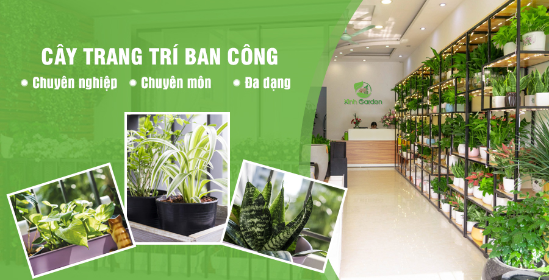
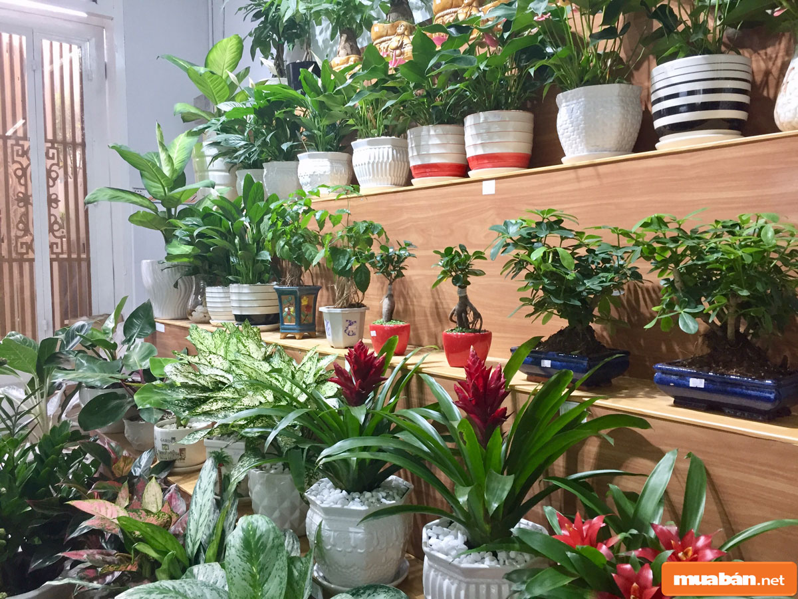
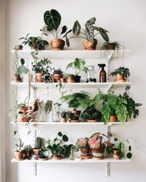
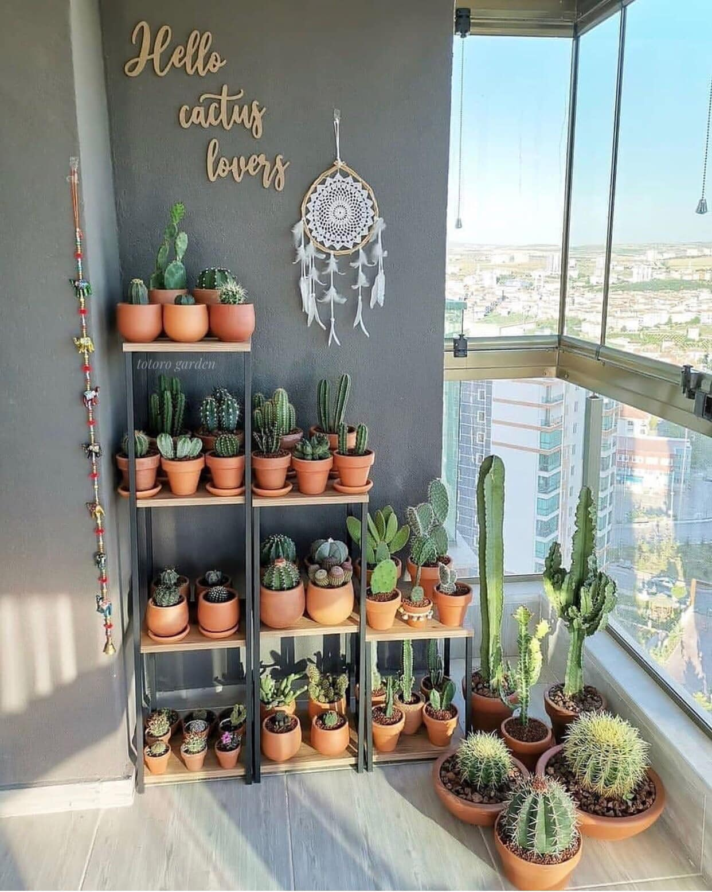
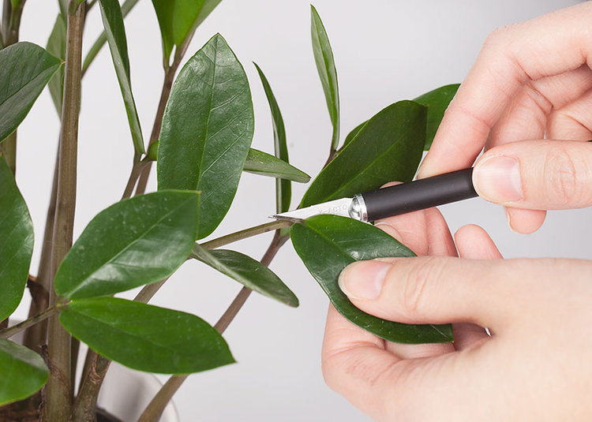
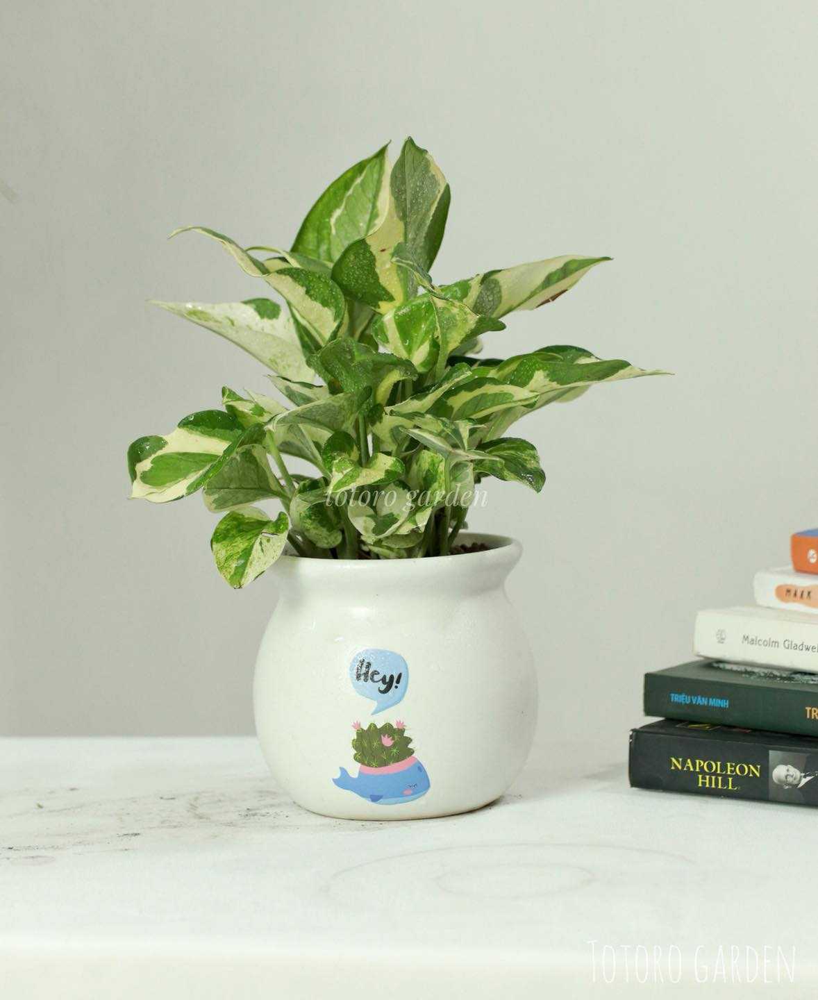

Totoro Garden – Uy tín vươn xa là thương hiệu trong lĩnh vực cây cảnh mini, sen đá – xương rồng, cây nội thất tại Hà Nội. Ra đời từ năm 2017, tới nay Totoro Garden đã phục vụ 30.000+ khách hàng. Triết lý kinh doanh của Chúng tôi là “Lan tỏa sức sống” và “Là bạn đồng hành” với khách hàng. Chúng tôi coi công việc của mình luôn mạng lại màu xanh tươi cho cuộc sống và kiến tạo giá trị, sức sống cho mọi không gian mà chúng tôi bước tới. Sự tin tưởng của Quý khách hàng trong suốt thời gian qua là niềm tự hào và là động lực để Totoro Garden tiếp tục lớn mạnh và phát triển.
XEM CHI TIẾT
All



CHÚNG TÔI LÀ TOTORO GARDEN

SẢN PHẨM MỚI

Cây string of heart(cây dây tim tím, vảy ốc tím, chuỗi tím,...)

Cây đuôi chồn (trúc đuôi chồn,...)

Cây thường xuân

Cây đa búp đỏ
CÂY VĂN PHÒNG

Cây string of heart(cây dây tim tím, vảy ốc tím, chuỗi tím,...)

Cây đuôi chồn (trúc đuôi chồn,...)

Cây thường xuân

Lan hạt dưa

Trúc phú quý

Tùng xương cá

Trầu bà lá xẻ

Cây ngũ gia bì

Cây lưỡi hổ
90.000 ₫ - 550.000 ₫

Cây bàng Singapore
90.000 ₫ - 550.000 ₫

Cây cá vàng
90.000 ₫ - 550.000 ₫

Cây hạnh phúc
90.000 ₫ - 550.000 ₫
TIỂU CẢNH TERRARIUM

Tổng hợp các mẫu tiểu cảnh sen đẹp, độc đáo(p1)

Tiểu cảnh kim tiền cẩm nhung

Tiểu cảnh cẩm nhung

Tiểu cảnh sen đá

Tiểu cảnh xương rồng

Tiểu cảnh cây hạnh phúc cẩm nhung
90.000 ₫ - 550.000 ₫

Tiểu cảnh cây vạn lộc cẩm nhung
90.000 ₫ - 550.000 ₫

Tiểu cảnh kim ngân cẩm nhung
90.000 ₫ - 550.000 ₫

Tiểu cảnh thuỷ tùng cẩm nhung

Tiểu cảnh cây tùng la hán cẩm nhung
90.000 ₫ - 550.000 ₫
SEN ĐÁ

Tổng hợp các mẫu tiểu cảnh sen đá đẹp, độc đáo(p1)

Cây string of heart(cây dây tim tím, vảy ốc tím,chuỗi tim,...)

Cỏ ngọc sừng

Sen đá giọt nước(giọt nước tròn, mắt nai)

Sen đá phật bà

Baby toes

Sen đá sỏi hồng

Sen nhung lông viền đen

Đô la trắng
90.000 ₫ - 550.000 ₫

Sen đá chuỗi ngọc bi
90.000 ₫ - 550.000 ₫

Sen đá chuỗi ngọc đứng
90.000 ₫ - 550.000 ₫

Sen dù kim
90.000 ₫ - 550.000 ₫
XƯƠNG RỒNG

Tổng hợp các mẫu tiểu cảnh sen đá đẹp

Cây sừng huơu(Cây lộc nhung)

Xương rồng gym

Xương rồng tuyết(trứng chim,nhện trắng)

Xương rồng gymno lem

Xương rồng mặc áo

Xương rồng móc câu

Xương rồng astro trắng

Xương rồng astro xanh

Tiểu cảnh xương rồng

Xương rồng ông lão

Xương rồng thần long
KIẾN THỨC CÂY
CẢNH

Tổng hợp các mẫu cây trang trí sảnh, ban công đẹp và độc đáo
Có thể nói cây cối là một món đồ trang trí độc đáo và có ...

Cách nhân giống kim tiền
Kim tiền là một loại cây nội thất phôt biến, được nhiều người ưa chuộng...

Top các loại trầu bà đẹp, phổ biến và cách chăm sóc
Trầu bà có tên tiếng anh là Pothos và tên khoa học Epipremnum aureum. Đây...
Sản phẩm
đa dạng phong phú.
Sản phẩm
đa dạng phong phú.
Sản phẩm
đa dạng phong phú.
Sản phẩm
đa dạng phong phú.